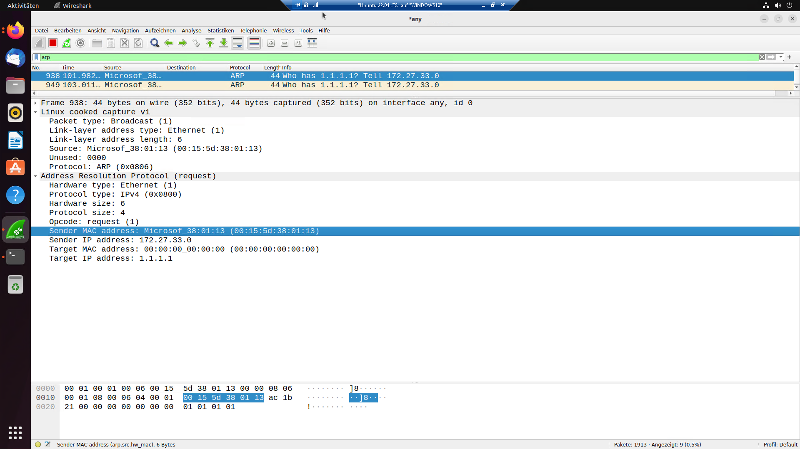
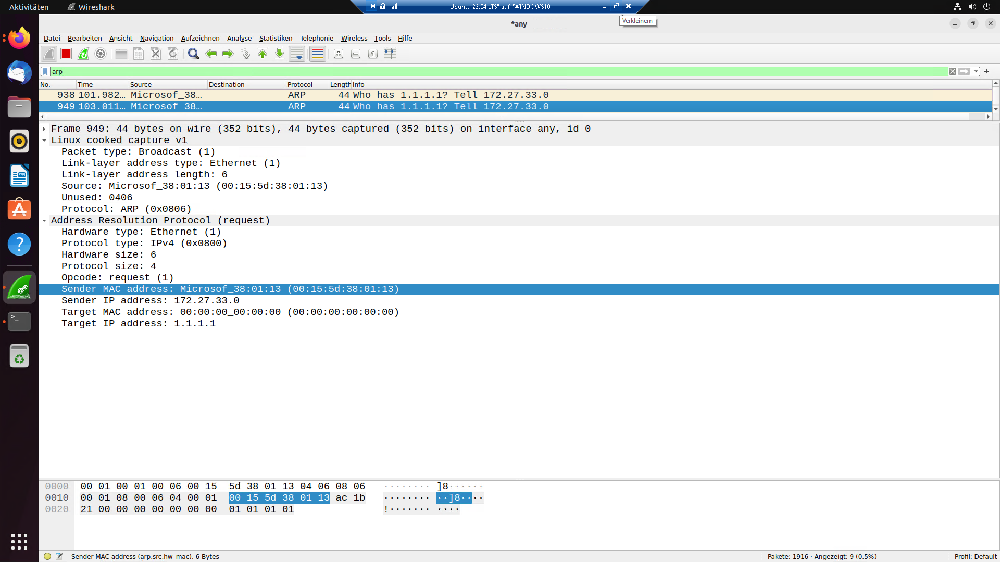

ITT-Netzwerke
Das Ethernet-Protokoll betrifft sowohl das Physical Layer (Bitübertragunsschicht) – Festlegung von Kabeln und Steckern – als auch das Data Link Layer (Sicherungsschicht).
Es fügt Daten-Frames den ersten Header hinzu. Dieser enhält nach einer Präamble als wichtigste Informationen, die Ziel- und Quell-MAC-Adresse.

ARP ist ein Layer-2-Protokoll. Es ordnet IPv4-Adressen, MAC-Adressen zu, in dem es per Broadcast alle Rechner im Netzwerk anfragt, wer die entsprechende IP hat. Der Dazugehörige Befehl
Wenn ein Rechner die IP besitzt schickt er in einem Antwortpaket seine MAC-Adresse.
ARP-Pakete enthalten keinen IP- oder TCP-/UDP-Header.
